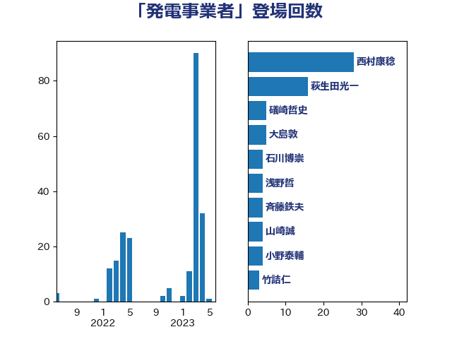

単語「発電事業者」

| 西村康稔 | 自由民主党 | 28 回 |
| 萩生田光一 | 自由民主党 | 16 回 |
| 礒崎哲史 | 国民民主党 | 5 回 |
| 大島敦 | 立憲民主党 | 5 回 |
| 石川博崇 | 公明党 | 4 回 |
| 浅野哲 | 国民民主党 | 4 回 |
| 斉藤鉄夫 | 公明党 | 4 回 |
| 山崎誠 | 立憲民主党 | 4 回 |
| 小野泰輔 | 日本維新の会 | 4 回 |
| 竹詰仁 | 国民民主党 | 3 回 |
| 浦野靖人 | 日本維新の会 | 3 回 |
| 河野義博 | 公明党 | 3 回 |
| 岸田文雄 | 自由民主党 | 3 回 |
| 宗清皇一 | 自由民主党 | 3 回 |
| 北村経夫 | 自由民主党 | 3 回 |
| 中川宏昌 | 公明党 | 3 回 |
| 鈴木義弘 | 国民民主党 | 2 回 |
| 赤木正幸 | 日本維新の会 | 2 回 |
| 石川大我 | 立憲民主党 | 2 回 |
| 山岡達丸 | 立憲民主党 | 2 回 |
| 小林鷹之 | 自由民主党 | 2 回 |
| 城井崇 | 立憲民主党 | 2 回 |
| ながえ孝子 | 無所属 | 2 回 |
| 青木愛 | 立憲民主党 | 1 回 |
| 里見隆治 | 公明党 | 1 回 |
| 越智俊之 | 自由民主党 | 1 回 |
| 藤木眞也 | 自由民主党 | 1 回 |
| 落合貴之 | 立憲民主党 | 1 回 |
| 舟山康江 | 国民民主党 | 1 回 |
| 笠井亮 | 日本共産党 | 1 回 |
| 空本誠喜 | 日本維新の会 | 1 回 |
| 石井正弘 | 自由民主党 | 1 回 |
| 石井拓 | 自由民主党 | 1 回 |
| 田島麻衣子 | 立憲民主党 | 1 回 |
| 猪瀬直樹 | 日本維新の会 | 1 回 |
| 梶山弘志 | 自由民主党 | 1 回 |
| 末次精一 | 立憲民主党 | 1 回 |
| 平山佐知子 | 無所属 | 1 回 |
| 岩渕友 | 日本共産党 | 1 回 |
| 山口壯 | 自由民主党 | 1 回 |
| 太田房江 | 自由民主党 | 1 回 |
| 坂本祐之輔 | 立憲民主党 | 1 回 |
| 和田義明 | 自由民主党 | 1 回 |
| 吉良よし子 | 日本共産党 | 1 回 |
| 加藤鮎子 | 自由民主党 | 1 回 |